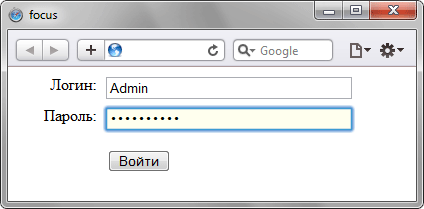

Псевдокласс :focus
Псевдокласс :focus определяет стиль для элемента получающего фокус. Например, им может быть текстовое поле формы, в которое устанавливается курсор.
Синтаксис
Селектор:focus { ... }Пример
<!DOCTYPE html>
<html>
<head>
<meta charset="utf-8">
<title>focus</title>
<style>
#enter .label {
width: 80px; /* Ширина блока с текстом */
float: left; /* Расположение в одну строку с полем */
text-align: right; /* Выравнивание по правому краю */
}
#enter .form-text {
width: 240px; /* Ширина поля */
margin-left: 10px; /* Расстояние между полем и текстом */
border: 1px solid #abadb3; /* Рамка вокруг текстового поля */
padding: 2px; /* Поля вокруг текста */
}
#enter .form-item {
margin-bottom: 5px; /* Отступ снизу */
}
#enter .form-text:focus {
background: #ffe; /* Цвет фона */
border: 1px solid #29B0D9; /* Параметры рамки */
}
#enter p {
margin-left: 90px; /* Сдвиг вправо */
}
</style>
</head>
<body>
<form action="login.php" method="post" id="enter">
<div class="form-item">
<span class="label">Логин:</span>
<span class="field"><input type="text" name="login" value="" class="form-text"></span>
</div>
<div class="form-item">
<span class="label">Пароль:</span>
<span class="field"><input type="password" name="pass" class="form-text"></span>
</div>
<p><input type="submit" value="Войти" /></p>
</form>
</body>
</html>Результат данного примера показан на рис. 1. При получении фокуса текстовое поле меняет цвет фона и цвет границы.

Рис. 1. Результат использования псевдокласса :focus
Примечание
Chrome не добавляет стиль для элемента a, чтобы заставить его понимать правило a:focus, добавьте к элементу <a> атрибут tabindex.
<a href="1.html" tabindex="1">Ссылка</a>Спецификация
| Спецификация | Статус |
|---|---|
| Selectors Level 4 | Рабочий проект |
| Selectors Level 3 | Рекомендация |
| CSS Level 2 (Revision 1) | Рекомендация |
Браузеры
| Internet Explorer | Chrome | Opera | Safari | Firefox |
| 8 | 1 | 7 | 1 | 1 |
| Android | Firefox Mobile | Opera Mobile | Safari Mobile |
| 1 | 1 | 6 | 1 |